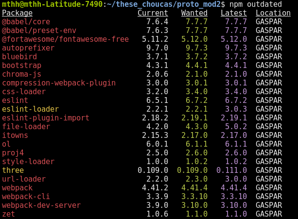
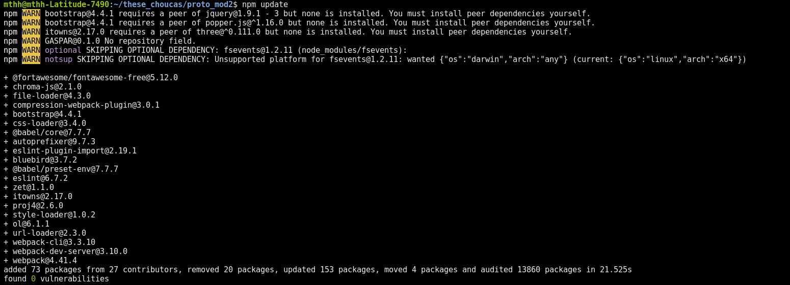

## Environnement de dev. ## javascript ## pour applications Web <div style="padding: 0;margin: 250px 0 0 0;font-size: 0.8em;display: flex;"> <span style=" width: 50%; text-align: left; ">Matthieu Viry</span><span style=" width: 50%; text-align: right; ">20 décembre 2019</span> </div>
## Au programme (et si ça vous va) * L'ancienne approche * Node.js et npm * Outils utiles qui vont avec * On essaye
### "L'ancienne approche" * Téléchargement des bibliothèques JS une à une dans un dossier local ... * ... ou utilisation de Réseau de Distribution du Contenu (*CDN*) * Approche *CDN* a également des avantages ... (mise en cache du contenu, etc.) <pre style="font-size: 0.3em;"> <code class="hljs xml"> <script src="https://cdn.rawgit.com/openlayers/openlayers.github.io/master/en/v6.1.1/build/ol.js"></script> <link rel="stylesheet" href="https://cdn.rawgit.com/openlayers/openlayers.github.io/master/en/v6.1.1/css/ol.css"> </code> </pre>
### "L'ancienne approche" * Suivi des mises à jour plus difficile * Si utilisation d'un *CDN* : nécessite accès internet <br><span class="small"> + risque de lien mort (pas vraiment un *CDN* mais utilisation de https://openlayers.org/en/v4.6.4/build/ol.js dans le code d'un collègue ... lien mort depuis)</span> * Pas d'élimination du code non utilisé ni du code en double (dépendances utilisées par plusieurs des bibliothèques importées par exemple)
<img src="img/Node.js_logo.svg" class="no-box" style="width: 240px;" /> --- ### `Node.js` - Un environnement d'exécution JavaScript (*runtime*) <span></span><br><br> <!-- .element: class="fragment" --> - V8 comme moteur d'exécution <br><br><!-- .element: class="fragment" --> - Exécuter du code JS hors du navigateur <br><br><!-- .element: class="fragment" -->
<img src="img/Npm-logo.svg" class="no-box" style="width: 240px;" /> --- ### `npm` - Gestionnaire de package par défaut de Node.js<br><br> <!-- .element: class="fragment" --> - Partage et publication du code source de bibliothèques javascript<br><br> <!-- .element: class="fragment" --> - Installation / mise à jour / etc. des dépendances<br><br> <!-- .element: class="fragment" --> - Alternatives : <!-- .element: class="fragment" --><span class="small">__Yarn__ (https://yarnpkg.com) et __Bower__ (https://bower.io/)</span>
### Installation de `npm` - Fournit avec les dernières versions de `Node.js` - Téléchargement : https://nodejs.org/
### Le fichier `package.json` <span class="small"><em>Doc. officielle : https://docs.npmjs.com/files/package.json</em></span> - **Décrire les dépendances d'un projet** - **Spécifier des actions à exécuter** (pour préparer le code avant de l'utiliser, pour exécuter une suite de tests, etc.) - Les données de ce fichier (auteur, email, numéro de version, etc.) seront utilisées si le projet est publié sur https://www.npmjs.com/ - Il est créé par la commande `npm init`
**Fichier par défaut, obtenu avec `npm init -y` (utilise le nom du répertoire courant)** ```json { "name": "test-project", "version": "1.0.0", "description": "", "main": "index.js", "scripts": { "test": "echo \"Error: no test specified\" && exit 1" }, "keywords": [], "author": "", "license": "ISC" } ```
**Fichier d'un projet existant** ```json { "name": "@mapbox/hecatejs", "version": "11.1.0", "main": "cli.js", "repository": "git@github.com:mapcommons/HecateJS", "author": "ingalls <ingalls@protonmail.com>", "license": "MIT", "bin": { "hecatecli": "cli.js" }, "devDependencies": { "@mapbox/eslint-config-geocoding": "^2.0.0", "codecov": "^3.0.4", "documentation": "^12.1.4", "eslint": "^6.6.0", "eslint-plugin-node": "10.0.0", "nyc": "^14.1.1", "tape": "^4.9.0" }, "dependencies": { "@mapbox/geojsonhint": "^3.0.0", "@turf/turf": "^5.1.6", "aws-sdk": "^2.224.1", "better-sqlite3": "^5.4.3", "d3-queue": "^3.0.7", "geojson-rewind": "^0.3.1", "geojson-validation": "^0.2.0", "minimist": "^1.2.0", "n-readlines": "^1.0.0 ", "nock": "^11.7.0", "parallel-transform": "^1.2.0", "prompt": "^1.0.0", "request": "^2.88.0", "requestretry": "^4.0.0", "split": "^1.0.1" }, "eslintConfig": { "extends": "@mapbox/eslint-config-geocoding" }, "engines": { "node": ">=10" }, "scripts": { "doc": "$(yarn bin)/documentation build --github --format md --output docs/api.md cli.js lib/**", "test": "yarn lint && tape test/*.test.js", "coverage": "TESTING=true nyc tape 'test/**/*.js' && nyc report --reporter=text-lcov > coverage.lcov && codecov", "lint": "eslint cli.js lib/*.js util/*.js test/*.js" } } ``` <p style="margin: auto; font-size: 0.4em;"> <span>Source : <a href="https://github.com/mapbox/HecateJS/blob/master/package.json">https://github.com/mapbox/HecateJS/blob/master/package.json</a> </span> </p>
### Commandes `npm` (1) **Création d'un projet, (dés)installation de dépendances, etc.** - Agissent dans le dossier actuel (sauf si paramètre `-g` est utilisé) - `npm init` - `npm install` - `npm install <package-name>` - `npm install --save-dev <package-name>` - `npm uninstall <package-name>`
### Commandes `npm` (2) **Exécution de scripts liés au projet, mise à niveau des dépendances, etc.** - `npm run <cmd>` - `npm outdated` <br> - `npm update` <br>(utilise la version de la colonne *Wanted* de la commande précédente) <br> 
### Commandes `npm` (3) **Gestion du versionnement (_semver_), publication sur npmjs.org, etc.** - `npm version patch` (*0.1.0* -> *0.1.1*) - `npm version premajor --preid alpha` (*0.1.0* -> *1.0.0-alpha.0*) - `npm publish` <br> - `npm deprecate <package-name@version> "message"`
### Outils utiles / fréquemment utilisés - __*Bundler*__ / __Empaqueteur de ressources__ (*Webpack*, *Parcel*, etc.) - __Transpileur__ / __compilateur source à source__ (*Babel*, etc.)<br><span class="small"><em>(Convertir code JS récent vers versions précédentes pour cibler d'anciens navigateurs ou utiliser des fonctionnalités pas encore implémentées dans navigateurs actuels ; convertir les fichiers `JSX` ; etc.)</em></span> - __Préprocesseur CSS__ (*Sass*, *Less*) - __Analyse statique du code__ (*ESLint*, etc.) ou formatteur de code (*ESLint*, *standardjs*, etc.) - Framework pour l'exécution de __tests__ (*Jasmine*, *MochaJS*, *QUnit*, *Tape*, *AVA*, etc.)
### *Bundler* - Webpack - Google Closure Compiler - Parcel - Rollup - Browserify - ...
### Webpack - https://webpack.js.org/ - Couvre énormément d'aspects de la préparation du code d'une appli en JS - Peut paraitre complexe à prendre en main - *PWA*, *hot-reloading*, *code splitting*, *tree shaking*, etc. - Voir présentation : https://mthh.github.io/intro_webpack_190509/
### Parcel - https://parceljs.org/ - Assez puissant dans son mode _"zero-config"_ - Doc. entièrement en français - Va empaqueter les différentes ressources utilisées (JS, images, JSON, etc.) - Remplacement de modules à chaud, etc.
### Mise en pratique #### Créer un nouveau projet utilisant `parcel` et les bibliothèques `d3` et `bulma` - `mkdir projet-vendredi && cd projet-vendredi && npm init` - `npm install --save-dev parcel-bundler` - `npm install d3 bulma` - `mkdir src && touch src/index.html && touch src/main.js` - Ajouter dans le fichier `package.json`: ```json { ... "scripts": { "dev": "parcel src/index.html", "build": "parcel build src/index.html" }, ... } ```
**La structure du projet actuellement** ``` project-vendredi -- Racine du projet ├── src/ -- Fichiers sources │ ├── index.html │ └── main.js ├── node_modules/ -- Dépendances Node.js ├── package.json └── package.lock.json -- Généré automatiquement ``` <!-- --- - On ajoute au fichier `src/index.html` : ```html <!DOCTYPE html> <html lang="en"> <head> <title>Projet de vendredi</title> </head> <body> <section id="main">Test</section> <script src="./main.js"></script> </body> </html> ``` --> --- - On ajoute au fichier `src/index.html` : ```html <body> <section id="main">Test</section> <script src="./main.js"></script> </body> ``` --- - On ajoute au fichier `src/main.js` : ```js import 'bulma/css/bulma.css'; import * as d3 from 'd3'; d3.select('#main') .attr('class', 'section') .append('a') .attr('class', 'button is-info is-rounded') .text('Ok !'); ``` --- - On peut démarrer `parcel` ``` npm run dev ``` ... continuer à éditer les fichiers `index.html` et `main.js` <br><br> ... et voir le résultat à l'url http://localhost:1234 <br><br> *(on constate que notre boutton a bien été créé grace à `d3` et qu'il utilise bien le style définit par `bulma`)* --- - Pour seulement préparer le code et le récupérer dans le dossier `dist/` : ``` npm run build ```
### Remarques sur Parcel - Ici on l'a utilisé en mode _"zero-config"_ - https://github.com/parcel-bundler/parcel#parcel-config si besoin
### Prochaine étapes : - Ajouter de nouvelles dépendances nécessaires à notre projet" - Quelques idées sur la prochaine slide ...
### Autres outils utiles : - [Sass](https://sass-lang.com/) (préprocesseur CSS) - [ESLint](https://eslint.org/) (analyse statique du code) - [PostCSS](https://github.com/postcss/postcss) et [Autoprefixer](https://github.com/postcss/autoprefixer)<br>(pour ne pas saisir les préfixes vendeurs : `webkit-`, `moz-`, etc.) - [Browserlist](https://github.com/browserslist/browserslist) (pour cibler certains navigateurs / des versions spécifiques)
### Merci !